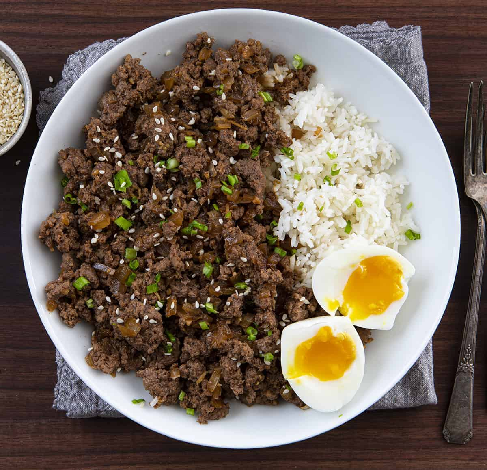
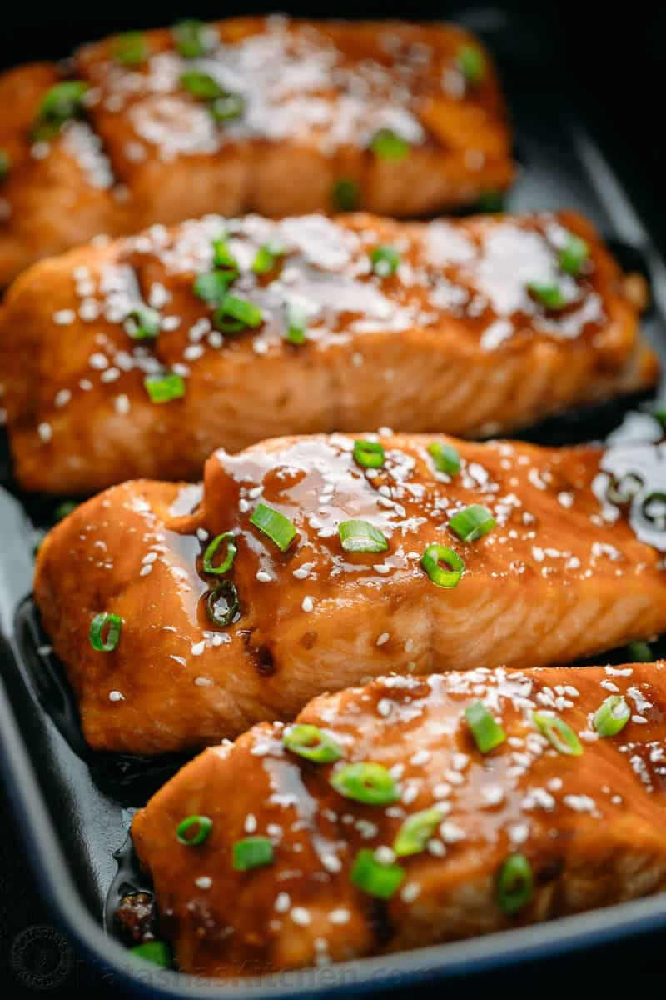
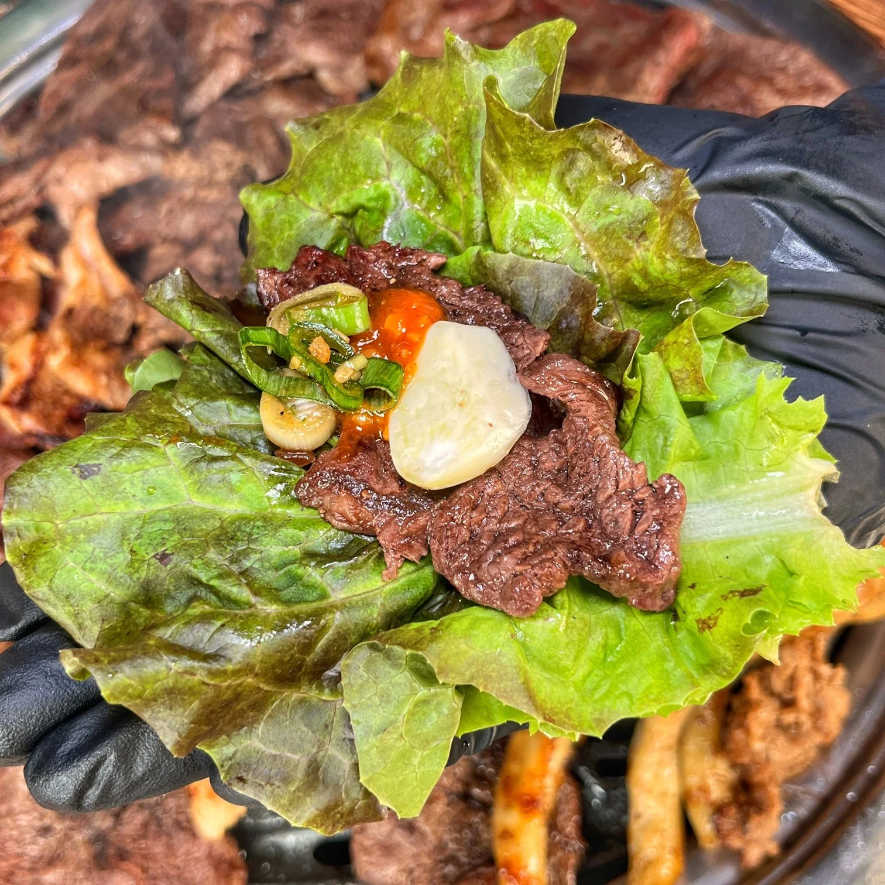
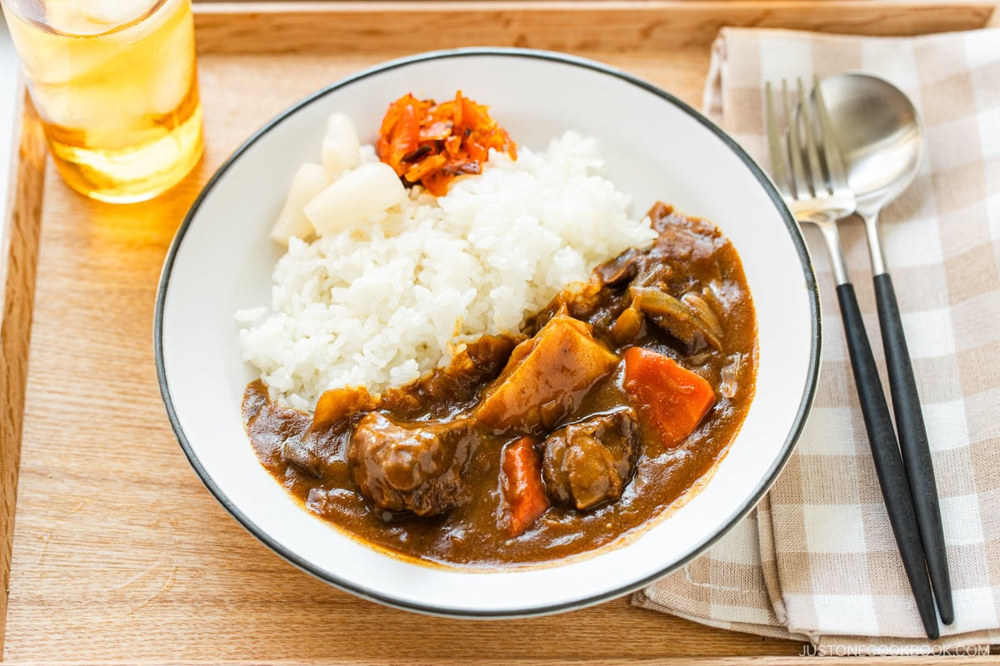
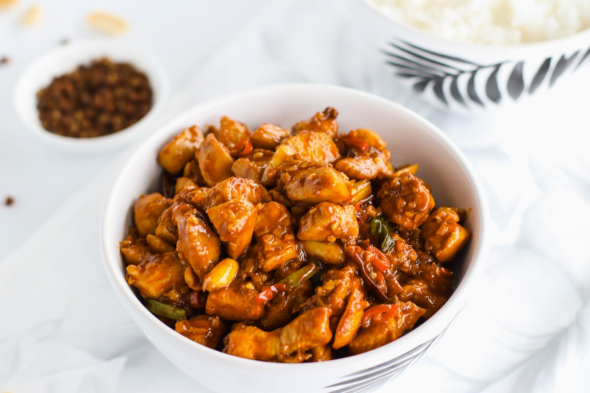
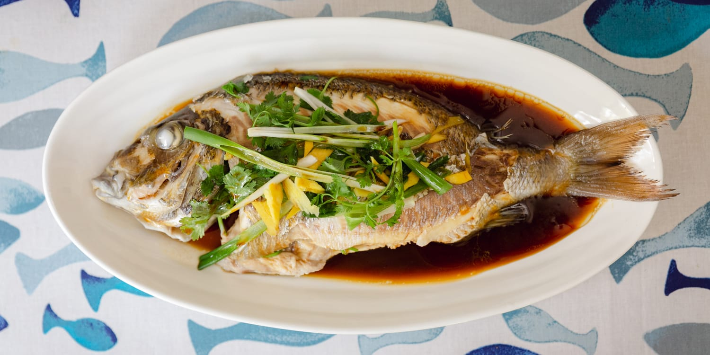

Ten evening mains—grills, braises, and stir-fries—each with tasting notes and step-by-step guidance.
Beef bulgogi

Sweet-savory soy and pear-tenderized beef with sesame and garlic—rich with a slight char.
How to make it
- Freeze ribeye slightly; slice paper-thin against the grain.
- Marinate for 30–60 minutes with soy, sugar, sesame oil, pear purée, garlic, and pepper.
- Stir-fry in a very hot pan in batches until edges caramelize.
- Serve with rice, lettuce wraps, and ssamjang if you like.
Teriyaki salmon

Buttery fish with lacquered glaze—sweet, salty, and a little smoky from the pan.
How to make it
- Pat salmon dry; season lightly with salt.
- Pan-sear skin-side down until crisp; flip briefly.
- Glaze with reduced soy, mirin, sake, and sugar until sticky.
- Rest a minute; serve with rice and quick-steamed greens.
Mapo tofu

Numbing pepper heat, fermented bean savor, and silky tofu—bold and deeply aromatic.
How to make it
- Stir-fry ground pork (optional) with doubanjiang until oil reddens.
- Add garlic, ginger, and Sichuan pepper; bloom in oil.
- Gently simmer soft tofu in stock; thicken with cornstarch slurry.
- Finish with scallions and a drizzle of chili oil.
Korean lettuce wraps (ssam)

Smoky protein wrapped in cool lettuce with punchy sauce—interactive and fresh.
How to make it
- Grill or pan-cook marinated pork belly or beef strips.
- Wash butter lettuce or perilla leaves and dry well.
- Offer rice, ssamjang, kimchi, and sliced garlic on the side.
- Let everyone build bites: leaf, rice, meat, sauce, fold, eat.
Thai basil chicken (pad krapow)

Garlicky, chile-hot, and deeply savory with holy basil—best over rice with a crispy egg.
How to make it
- Pound garlic and chiles; stir-fry in oil until fragrant.
- Add ground chicken; break up and cook through.
- Season with soy, fish sauce, oyster sauce, and sugar.
- Fold in Thai basil off heat; serve with jasmine rice and fried egg.
Japanese curry rice

Mild, sweet curry with soft potatoes and carrots—comforting and family-friendly.
How to make it
- Sauté onion until soft; add chicken or beef and brown lightly.
- Add cubed potato and carrot; pour in water and simmer until tender.
- Off heat, stir in curry roux blocks until dissolved; simmer to thicken.
- Serve over short-grain rice with fukujinzuke pickles if available.
Kung pao chicken

Tangy vinegar-soy sauce, gentle heat from dried chiles, and crunchy peanuts.
How to make it
- Velvet chicken with cornstarch and a little oil; stir-fry until just cooked; remove.
- Fry dried chiles and Sichuan peppercorns briefly; add aromatics.
- Return chicken with sauce (soy, vinegar, sugar, stock, cornstarch).
- Toss with roasted peanuts and scallions; serve hot.
Steamed fish with ginger & scallion

Clean, delicate fish with aromatic steam—ginger warmth and soy-sesame finish.
How to make it
- Score a whole white fish; stuff and top with ginger and scallion whites.
- Steam 10–15 minutes depending on size until flaky at the thickest part.
- Heat oil until very hot; pour over fish with soy and a splash of water.
- Garnish with scallion greens and cilantro.
Simple home hot pot

Shared simmering broth—mushroom umami or mild chicken—whatever you dip picks up the flavor.
How to make it
- Simmer kombu dashi or chicken stock with garlic and ginger as the base.
- Arrange platters of thin meat, tofu, mushrooms, noodles, and greens.
- Keep broth at a gentle bubble at the table; cook items in batches.
- Dip in sesame sauce, ponzu, or chili oil as you like.
Dan dan noodles

Nutty sesame, spicy chile oil, and savory pork—slippery noodles with a slow-building heat.
How to make it
- Stir-fry minced pork with ya cai (pickled mustard) or substitute.
- Whisk sesame paste, soy, black vinegar, chili oil, and garlic for the sauce.
- Toss cooked wheat noodles with a little hot noodle water to loosen.
- Top with pork, sauce, scallions, and extra chili oil.